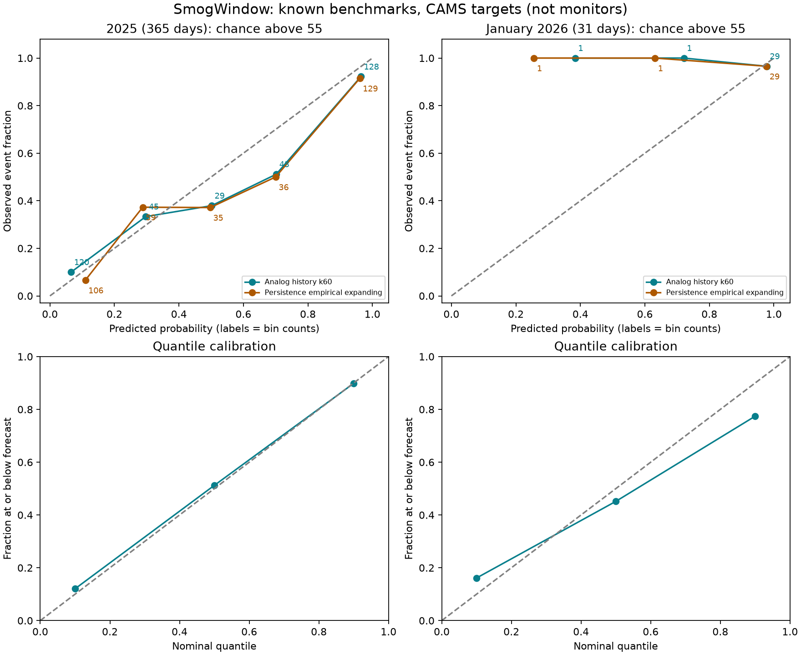
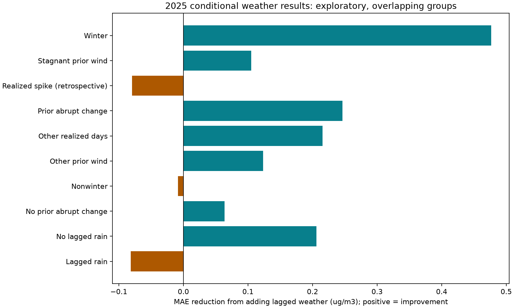

Plan tomorrow. Understand the uncertainty.
Lahore historical replay · monthly model refits · transparent comparisons
Replay a planning decision
Choose a historical day, inspect the forecast, then reveal the next-day reference. This prototype helps explore contingency planning; it does not authorize outdoor activity.
Recent context
Teal: available CAMS history. Orange dot: next-day median. Orange vertical line: selected interval. These are modeled values.
Weather is an experiment—not an assumed improvement
| Point-forecast comparison | µg/m³ |
|---|
The probability model was selected on development CRPS and uses pollution history, because adding weather did not win that selection. Its median and the separately fitted ridge point predictions are different outputs.
Does the planning flag help?
Calculated over all 365 days of 2025 using your selected threshold and cost. A lower assumed cost is better. These are retrospective modeled outcomes; no real-world benefit is established.
What the full benchmark says
| Period | Weather ridge MAE | No-weather ridge MAE | Persistence MAE | Probability model CRPS | Baseline CRPS | 80% coverage |
|---|
January reliability limitation: the nominal 80% interval covered only 61.3% of the 31 January days. Probabilities are experimental estimates; they are not demonstrated to be reliable for school decisions.
Reliability and quantile calibration plots

Bin labels show sample counts. January contains only one day at or below 55, so it provides weak evidence about false alarms.
Conditional weather results

Outcome-defined spike groups are retrospective diagnostics. They cannot be used to decide in advance when the model will work.
Full research report · External data and stakeholder requirements · Claude baseline dashboard (archived results)